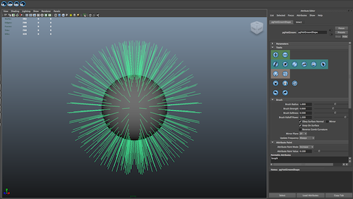
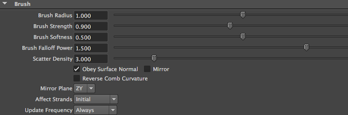
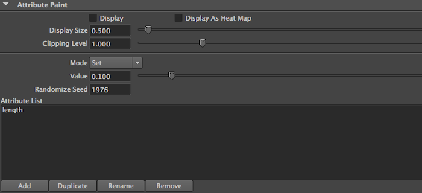
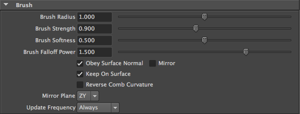
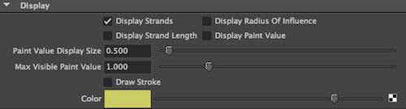
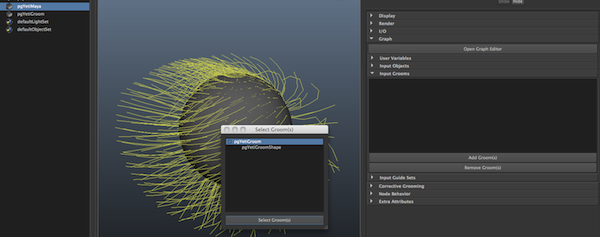
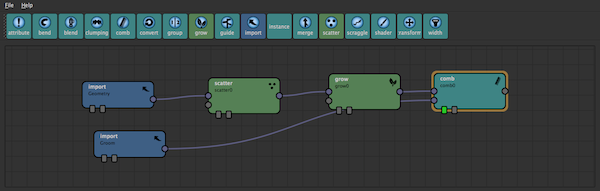
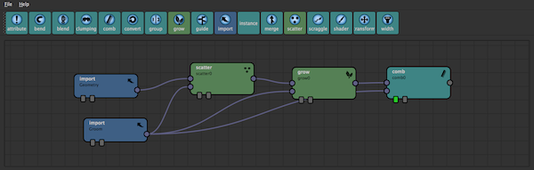

Grooming¶
Although the graph provides enough control to get a decent overall fur result in most cases you’re going to want a much more aesthetic means of controlling the look of the system.
Yeti provides this control via Grooms which is a set of controllable strands that can be shaped with the ability to store any number of custom attributes on each. A graph can rely on any number of input grooms which may control the length, density, direction or other node parameters via the Attribute node.
Creating a Groom¶
A groom is generated via a groom node in Maya - to create the groom select a mesh and press the CRG ( Create Groom ) button in the Yeti shelf and a new empty node will be created.
Grooms consist of any number of strands, defaulting to none, and require the user to create an initial set of strands - to do this use the Add followed by the Fill tool to quickly create a strand at every vertex which is a good default starting point for most grooms.
The Yeti Groom node works within it’s own grooming context where you can use brushes to cut, comb and paint the Groom. To enter the combing mode select the groom and in the attribute editor press any of the tools in the Tools palette - from this point on you can click and drag across the surface of the mesh to comb the strands in various modes.
As you groom the node maintains the length of the strand and tries to relax the segments to give a more fluid feel to the workflow.
Selection¶
While grooming it’s possible to select and de-select strands to limit the effect of the brush, to do this hold down the CTRL key and the first mouse button to select points and the CTRL key with the second mouse button to deselect points. You may find that while working on a groom you may want to only see strands you have selected, this is possible by toggling on the Isolate Selected attribute in the grooms Display palette.
Parameters¶
Global parameters are used to control the behavior of the Groom.
| Parameter | Description |
|---|---|
| Radius Of Influence | By default a strand in a groom has the potential of affecting any fur element created in the graph, by adjust the radius of influence you can limit the radius at which the strands affect the data. It’s generally a good idea to use the Display Radius Of Influence display parameter to visualize this. |
| Initial Strand Length | The default length for new strands, this can also be 0 to paint points vs strands. |
| Strand Segment Length | Each strand is made up of a number of segments, each segment will be equal too or less than this specified value - depending on the Initial Strand Length parameter. |
| Conform New Strands | When off new strands will use defaults set above, when on new strands will use interpolated values from the surrounding strands to conform itself to the neighbourhood. |
| Populate At Mesh Points | When on new strands will be created on the vertices of the input object, when off you’re able to create new strands anywhere on the input object. |
| Parting Randomness | Can be used to globally control how random the parting regions are. |
Tools¶
Populating¶
When populating you are adding or removing strands from the groom, depending on parameters selected you may be arbitrarily adding points to the surface or the new surface points can be constrained to the vertex positions.
Add - used to add strands to the groom, only a single strand will be created within the radius of the brush.
Delete - used to remove strands from the groom.
Scatter - add strands by scattering them on the surface under the brush as if using a spray can.
Combing¶
Combing tools affect the strands based on their surface position with the effect generally based on their relationship to the underlying surface and surrounding strands.
Comb - is the most familiar mode where the stroke pulls the strands in the direction of the brush stroke.
Direction - similar to comb, this will change the orientation of the strand but not it’s shape.
Lift - is used to lift the strands off of the surface of the mesh.
Straighten - is used to straighten out the strands.
Smooth - can be used to smooth out the strands to create a more even groom.
Move - used to move strand around the input surface
Scale - used to uniformly scale the strands, this differs from length as you’re not altering the strands shape.

Clump - as the brush moves the strands are pulled towards the centre axis.
Twist - twists the strands around the center axis of the brush.
Sculpting¶
Sculpting acts on the strands in world space. While sculpting the groom is less concerned about strand to strand relationship and focused on the over all shape/mass of the groom.
Sculpt - used to push/pull the strands as if you were sculpting them in a surface
Trim - trim away the ends of strands, as if you were using a plane/scissors to cut them
Utilities¶
The last few tools in the Tool palette are utilities.

Flood Fill - flood fill using the currently selected tool
De-Select - deselect strands previously selected with the ctrl-hot key
Invert Selection - invert the current selection
Undo - undo the last action ( CTRL + Z )
Redo - redo the last action ( CTRL + SHIFT + Z )
Brush Settings¶
| Parameter | Description |
|---|---|
| Brush Radius | Radius of the brush. |
| Brush Strength | Strength of the brush. |
| Brush Softness | How soft the brush is, this controls the falloff from the centre of the brush to the full radius. |
| Brush Falloff Power | Modulates the brushes effect along the length of the strand - a value of 1.0 will apply the same weight along the whole strand. |
| Scatter Density | Controls how dense the strands are when using the Scatter brush in populate mode. |
| Obey Surface Normal | Used to determine if strands facing away from the stroke will be affected. |
| Mirror | Turn brush mirroring on and off. |
| Reverse Comb Curvature | Applies an inverse weight along the length of the strand when Combing. |
| Mirror Plane | Choose which axis will be used for mirroring. |
| Affects Strands | Initial will only apply the brush affect to the strands contained within the brush at the start of the stroke, Continuous will apply the affect to the strands within the brush during the whole stroke. |
| Update Frequency | Always will continuously evaluate the graph during the stroke, On Release will only evaluate the graph at the end of the stroke (thus making the process more interactive). |
Attribute Painting¶
Besides used to adjust the shape of strands Yeti Grooming allows any number of custom attributes to be painted.
Attribute Painting is used to control attributes that generally represent one value per strand where the interaction takes on a more painterly feel vs. adjusting the strands directly, this includes length ( which is always available ), density and width.
Except for Length any other attribute needs to be added before painting - using the four buttons at the bottom of the palette a user can Add, Duplicate, Rename and Remove attributes ( except Length ).
To start painting an attribute double-click on it’s name in the Attribute List, all the brush parameters will affect the attribute paint as expected.
| Parameter | Description |
|---|---|
| Display | Turn attribute display on/off. |
| Display As Heat Map | Will draw the displayed paint values as a heat map vs. a greyscale representation of the values. |
| Display Size | Size of the attribute in the viewport. |
| Clipping Level | An attribute is treated as an HDR value which means it’s possible to paint above 1.0 - by adjusting the clipping level you can change. |
| Mode | Brush mode for painting. |
| Value | Value that will be painted. |
| Randomize Seed | The seed to use with the Random brush. |
Utilities¶
It is also possible to export the current attribute to a texture map ( using the current UV coordinates of the input mesh ) and import a texture to set the values of the current attribute.
Brush Parameters¶
| Parameter | Description |
|---|---|
| Brush Size | how big the brush is, this may also be adjusted by holding down the b key and dragging the mouse |
| Brush Strength | how much the brush stroke will affect the values |
| Brush Softness | how soft the brush stroke is, 1.0 is very soft and 0.0 is completely hard |
| Brush Power | will control how strong the stroke will be along the strand. A power of 0.0 will affect the whole strand equally where a power of 12 will push and pull the tips of the strands, as the tips are pulled the strands will maintain lengths and follow the tips. |
| Obey Surface Normal | as you paint you may want to control whether the stroke affects the side of the surface you’re painting or if it’s a stroke that can affect both the front and the back side of the surface. This toggles whether or not the surface normal is used to determine whether the surface direction should be considered when painting. |
| Mirror | mirrors the brush stroke as you paint, the mirror axis can also be selected though currently is world based vs. object based. |
| Reverse Comb Curvature | as you comb the weight of the stroke varies along the strand, by default this causes the base to be pulled more than the tip - when toggled on this will reverse the effect. |
| Mirror Plane | controls what plane is used to mirror the brush in world space |
| Update Frequency | is used to control how often changes to the Groom cause a dependent Yeti graph to update, when set to Always the Yeti graph will be evaluated during the brush stroke. When set to On Release the graph will be evaluated once a stroke has been completed. |
Display Parameters¶
| Parameter | Description |
|---|---|
| Display Strands | will turn off/on the display of the strands |
| Display Radius Of Influence | when on every tenth strand will have it’s radius of influence visible |
| Display Strand Length | provides feedback on the length of each strand, which is drawn at the tip |
| Draw Stroke | when on the path of the current brush stroke will be drawn |
| Color | the wireframe color of the groom |
Parting¶
Many hair styles are defined by a part where hair is combed in opposite directions to define a distinctive shape to the groom - although it’s possible to groom strands in opposite directions; by default Yeti tries to interpolate between the strands leading a fanning effect which may not be the desired result.
To support grooms where true parting is needed part regions can be created using a part_ tag as a prefix to a new attribute ( eg. part_left, part_right ). These attributes are masks that define the area of influence for the region and strands fully contained in one region will not interpolate with those fully contained in a different region, if a strand is contained in two ( or more ) regions then the effect is weighted based on the value of the masks.
A special attribute called part_randomness can also be painting which modulates how random the parts appear which is helpful to avoid uniform looking results.
Please see yeti_partingExample.ma for a reference.
Using Grooms¶
Once a groom has been created you’ll want to use the result in your graph. The first step is to attach the groom to your Yeti node, to do this select the Yeti node and open up the Graph/Input Grooms palette and Add Grooms(s). This will bring up a selection window that lists all the possible grooms in the scene.
Select the desired groom and Select Groom(s) which will attach the Groom to your Yeti node and you should now see it in the list of Input Grooms.
The next step is to return to the graph editor ( selected the Yeti Node and press GE in the Yeti shelf or Open Graph Editor ). As with all data you will need to import the groom, use the Import node and in the attribute inspector set it too groom mode. In the name field specify all or some of the name of the groom ( you need to specify the groom shape node, in practice it’s safe to use myGroom* vs. having to explicitly set myGroomShape ).
It’s likely that the minimal use for the groom will be to adjust the fibers directions and to do this you will need to use the Comb node. Once created make sure the main fur flow ( output from Grow ) is connected to the first input of the Comb node, and connect the output from your groom Import node to the second input of the Comb node. When set as the root you should now see the fibers adhering to the groom you created.
If you adjusted the lengths of the strands in the groom node you can also connect the groom to the second input of the Grow node, this tell the grow node to use the length attribute of the strands as a multiplier. Lastly, if you painted a density attribute on the groom node you can also connect the groom to the Scatter node in a similar manner to control how the initial source points are generated.
Once the groom has been imported and used in the graph and changes to the groom will dynamically be updated in the graph and viewport. This is useful to see the final result of the graph though depending on the density and complexity of the graph it may slow down interactivity.